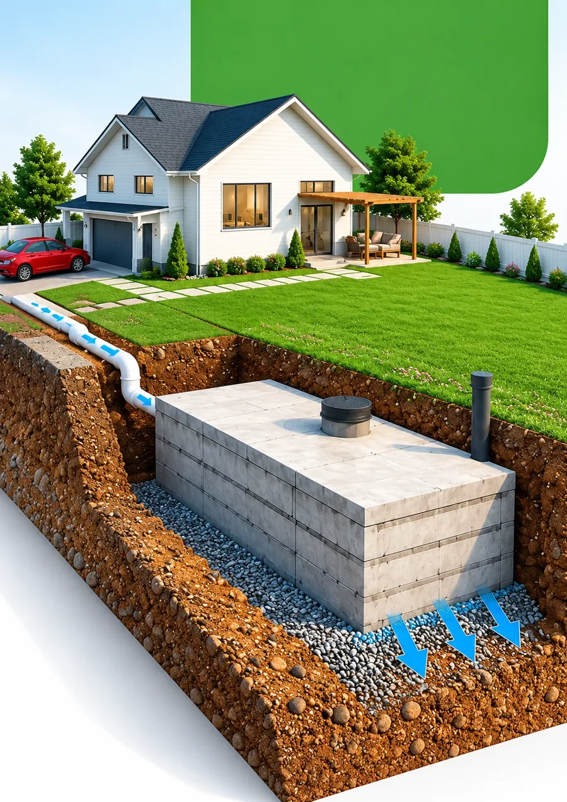
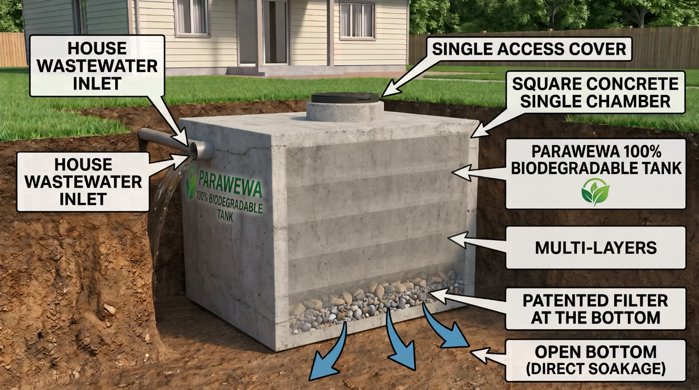
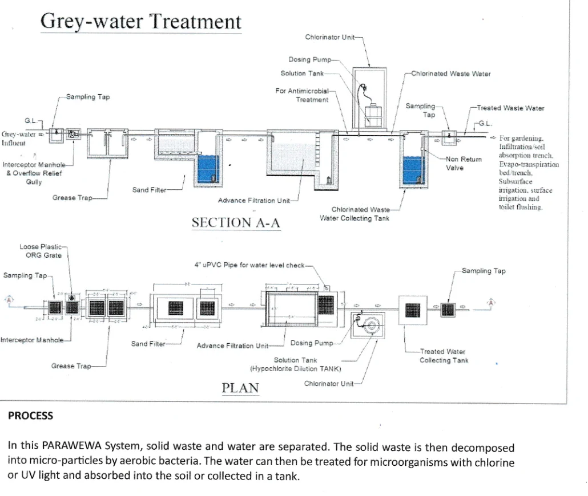
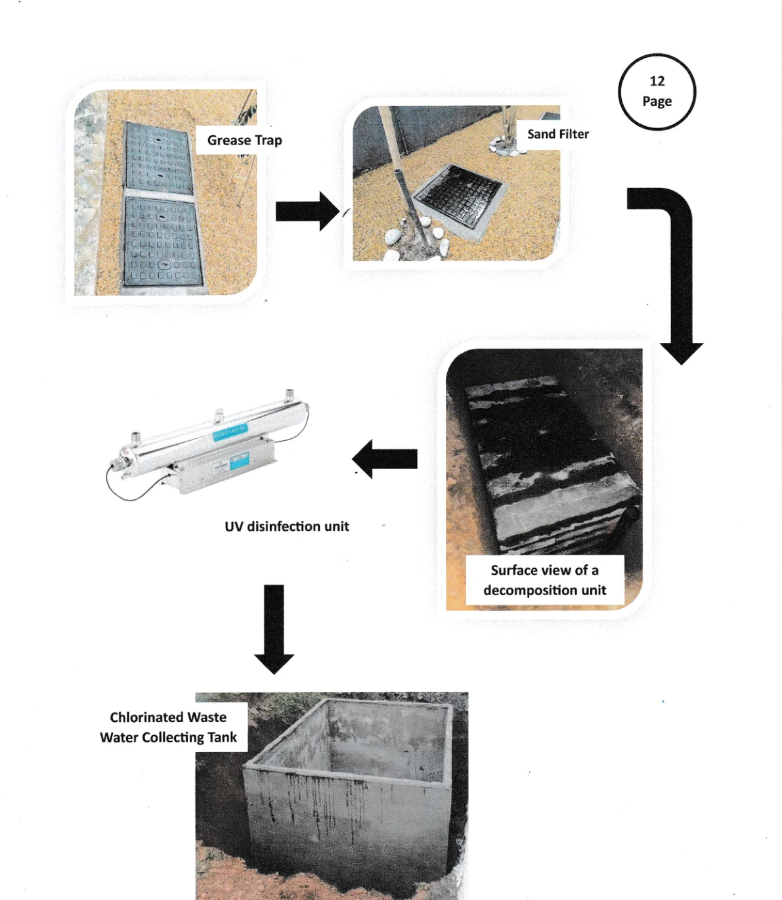
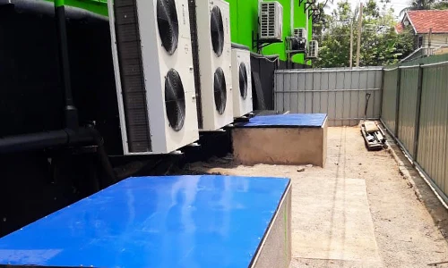
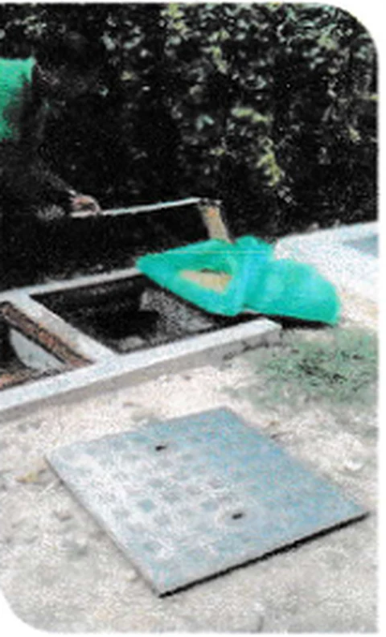

Septic systems built to last for generations
Parawewa replaces slow-to-build brick-and-mortar septic pits with a leak-proof, in-situ cast concrete system and natural bio-treatment. No gully bowsers, no desludging, and the industry's best 10-year written warranty.
- Sri Lanka Patent #16371
- 10-year written warranty
- 2018 Presidential award winner

Trusted by businesses, schools and hospitals across Sri Lanka
Organisations that have chosen Parawewa for their sanitation. See the full list of documented sites on the real projects page.


Transforming wastewater management across Sri Lanka
We are dedicated to patented engineering and eco-friendly, locally developed bio-septic technology. Founded on delivering durable, hassle-free sanitation, Parawewa replaces slow-to-build brick-and-mortar septic pits with precision-built, leak-proof, in-situ cast concrete systems designed to last for generations.
Who we are
A Sri Lanka-based wastewater engineering team. Our work combines heavy-duty concrete construction with natural, biological, layered treatment. Whether you are building a home, developing a commercial property or upgrading existing sanitation, our team delivers end-to-end installation with minimal disruption to your land.

Four reasons homeowners and businesses choose Parawewa
Rapid installation
Chambers are cast in-situ under strict quality control, so site placement and set-up move quickly with little disruption.
Eco-friendly bio-treatment
Multi-stage aerobic digestion naturally breaks down waste, giving cleaner effluent and protecting local soil and the groundwater table.
Water-tight & durable
Built to withstand high groundwater pressure, heavy monsoon rain and soil movement without cracking or leaking.
Maintenance-free
Engineered to prevent frequent blockages. No desludging and no gully bowsers, saving long-term running costs.
From a single home to a hotel or factory
Residential bio-septic tanks
Custom-sized in-situ cast units for single-family homes and apartment units.
Commercial sanitation
High-capacity solutions for hotels, restaurants, factories and schools.
Site preparation & installation
Turnkey excavation, positioning, connection and backfilling by our own skilled team.
Inspection & support
Technical consultation, system health checks and routine operational support.
Chosen to suit your land and water table
The right system depends on your soil and groundwater level. A free site inspection confirms which one fits.
Standard Parawewa System
Gravity-fed and passive, with no electricity needed. For plots with normal soil levels and a normal water table.
- Works through power cuts
- Few moving parts to look after
- 10-year written warranty
Seal Type Parawewa System
Water-sealed for marshy, coastal and flood-prone areas such as Negombo, Ja-Ela, Wattala and Mathugama. Uses an electrical pump and less electricity than other sewage treatment plants.
- Resists flotation in low-lying land
- Pump and disinfection unit serviced to the maker's instructions
- 10-year written warranty
The treatment flow, step by step
Official engineering drawings from Parawewa's technical documentation. Toilet waste (blackwater) and sink/shower water (greywater) take their own paths.
Official drawing: section A-A and plan of the blackwater treatment train.

Official drawing: section A-A and plan of the greywater treatment train.

Real components in treatment order: grease trap → sand filter → decomposition unit → UV unit → collecting tank.

Finished covers set at ground level at a site.
From site visit to a working system
A turnkey job handled entirely by our own team. Every site is engineered for its soil, water table and number of users.
Free site inspection
We check soil, water table and how many people the system must serve, then confirm the Standard or Seal Type system.
Excavation & site preparation
Our team excavates and prepares the base, with minimal disruption to your land.
In-situ casting & positioning
The concrete chamber and units are cast and positioned on site under strict quality control.
Connection & commissioning
Toilet and (if applicable) greywater lines are connected by a certified plumber, then the system is commissioned.
Backfill & handover
We backfill and set covers at ground level, then hand over your owner's manual and the written warranty.
Reference sizing: 3-bedroom house
From the official site installation plan. Actual sizes are engineered per site.
| Unit | Size | Material | Built |
|---|---|---|---|
| Decomposition unit (black & greywater) | 6'-0" × 4'-0" × 6'-0" | Concrete | Underground |
| Disinfection unit (UV / chlorinator) | 2'-0" × 0'-3" × 0'-5" | Dosing pump-fed | On-ground |
| Collecting tank | 4'-0" × 4'-0" × 6'-0" | Concrete | On-ground or underground |
| Grease trap | 6'-0" × 3'-0" × 3'-6" | Concrete | Underground |
| Sand filter | 9'-6" × 4'-0" × 3'-6" / 5'-6" | Concrete | Underground |
The system is patented and built only by Parawewa's own team, so there is no do-it-yourself installation guide.
Ready on day one, simple to look after
Once commissioned, the system is ready for blackwater and greywater straight away.
How to use it
- Use it normally from commissioning day. No start-up period.
- Toilet waste only goes into the blackwater unit. Do not route other lines into it.
- Use the sampling taps to check water quality when you need to.
- Slow drain? Look at the internal plumbing first and call a certified plumber.

Blackwater chamber
Designed to need no regular maintenance and no desludging, for lifetime use across many generations.
Grease trap (greywater)
Clean every week. After a few cycles you can adjust the interval to how much scum builds up.
Sand filter
Replacement is recommended by an authorised technician. Pumps and disinfection units follow the maker's service instructions.
An alarm sounds if the pump fails and the sump rises past the high level, before any overflow. It can be muted for 48 hours while a plumber is arranged. The chlorinator and UV unit have their own fault alarms.
Sand filter replacement layers
| Layer | Material | Quantity |
|---|---|---|
| Top | 1mm × 2mm sand | 2 cu. ft |
| Second | 2mm × 3mm sand | 2 cu. ft |
| Third | 5mm × 6mm sand | 3 cu. ft |
| Fourth | 10mm × 12mm sand | 3 cu. ft |
| Fifth | 13mm × 18mm metal stone | 4 cu. ft |
| Bottom | 18mm × 20mm metal stone | 4 cu. ft |
If something seems off
The toilet is not draining properly
This usually points to the internal plumbing line, not the tank. Have a certified plumber inspect it. This is the owner's responsibility.
An alarm is sounding
Have a certified plumber check the water pump. You can mute the alarm for up to 48 hours while this is arranged.
Water is overflowing at the overflow relief gully
Usually a blockage in the grease trap or sand filter, or a pump fault. Clear the grease trap with a wet/dry vacuum, refill the sand filter if it is blocked, or ask a plumber to check the pump.
The sand filter is blocked
Contact us for a service visit, or replace the filter layers using the chart above.
What the warranty does not cover
Taken from the official warranty terms. Worth knowing before you decide.
No liability for damage from natural calamities.
No liability for damage from tree roots or a change in the surrounding soil structure.
Opening the sewage pit without authorisation voids the warranty.
Connecting any line other than the toilet waste pipes into the blackwater pit cancels the warranty.
For greywater systems the 10-year warranty covers the concrete structure only, and depends on weekly grease trap cleaning.
The Seal Type system's pump and disinfection unit are mechanical parts and need servicing to the maker's instructions.
Because the system is patented and built by Parawewa only, installation cannot be done by third parties.
Safe, reliable, environmentally friendly sanitation for every Sri Lankan household and business
We aim to preserve our island's soil and natural waterways, and we back every project with clear installation timelines and dedicated after-sales support.
Key advantages
Choosing the right sanitation system protects your property and the environment.
Water-tight & monsoon-proof
Engineered to stop groundwater getting in during heavy rain and to keep wastewater from seeping into the surrounding soil.
Natural bio-filter
Multi-stage aerobic digestion reduces odour, breaks down organic matter and greatly lowers desludging.
For high water tables
Reinforced, weighted structures resist flotation and cracking in low-lying or flood-prone areas.
10-year warranty
Industry's best 10-year written warranty on our tanks, with maintenance-free blackwater operation.